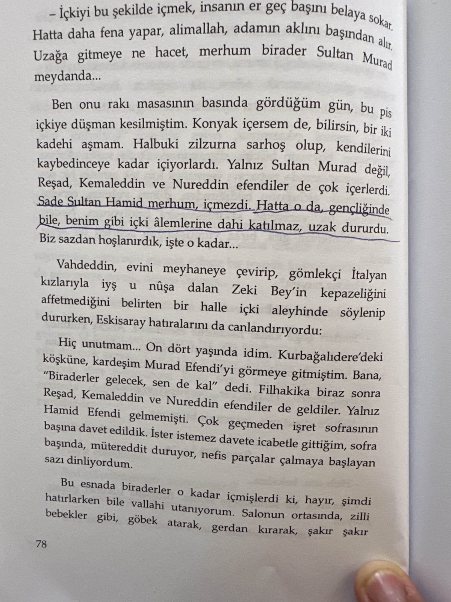
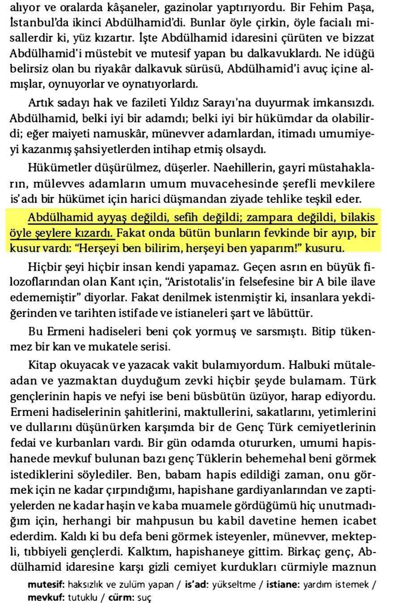
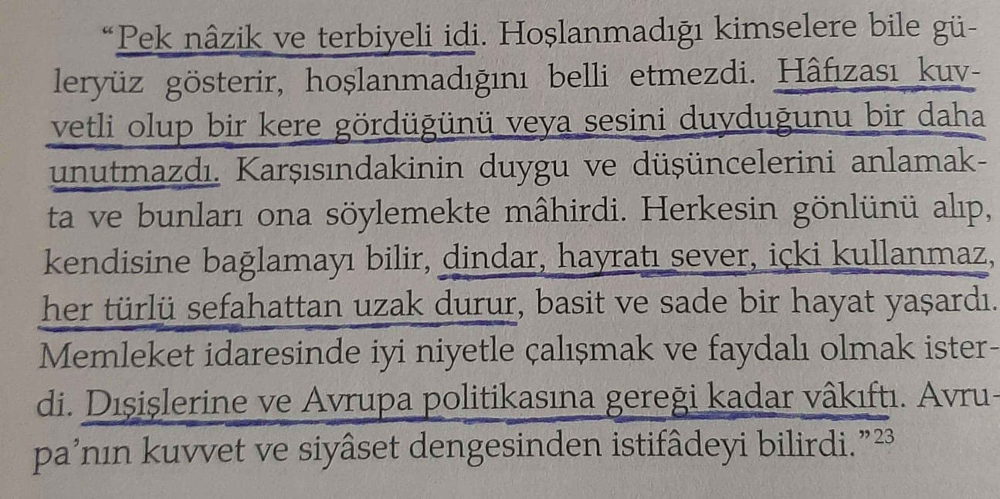
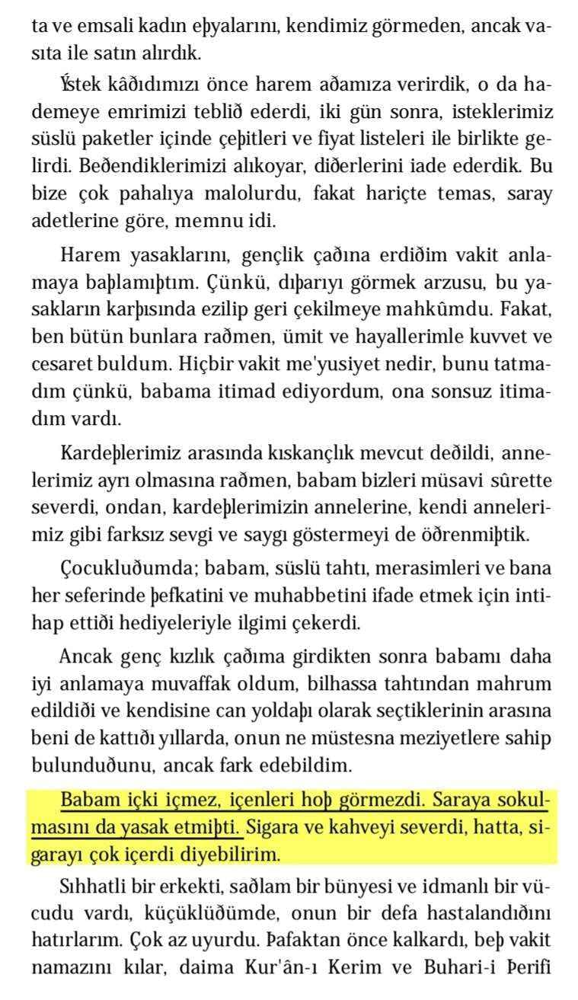
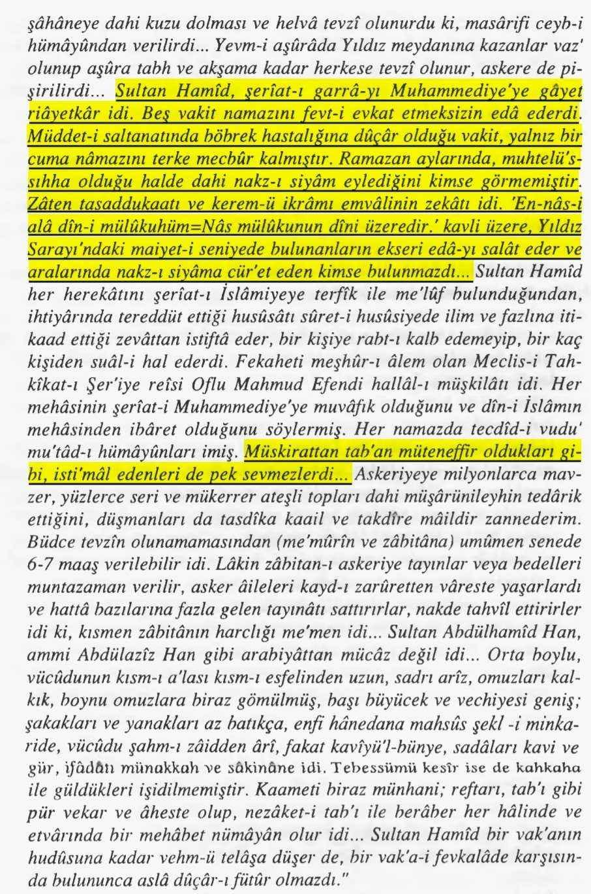
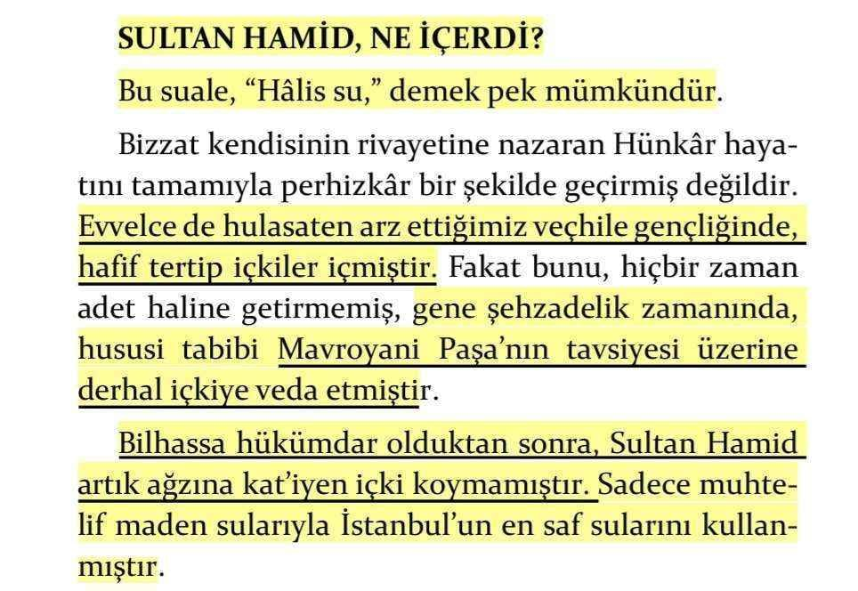
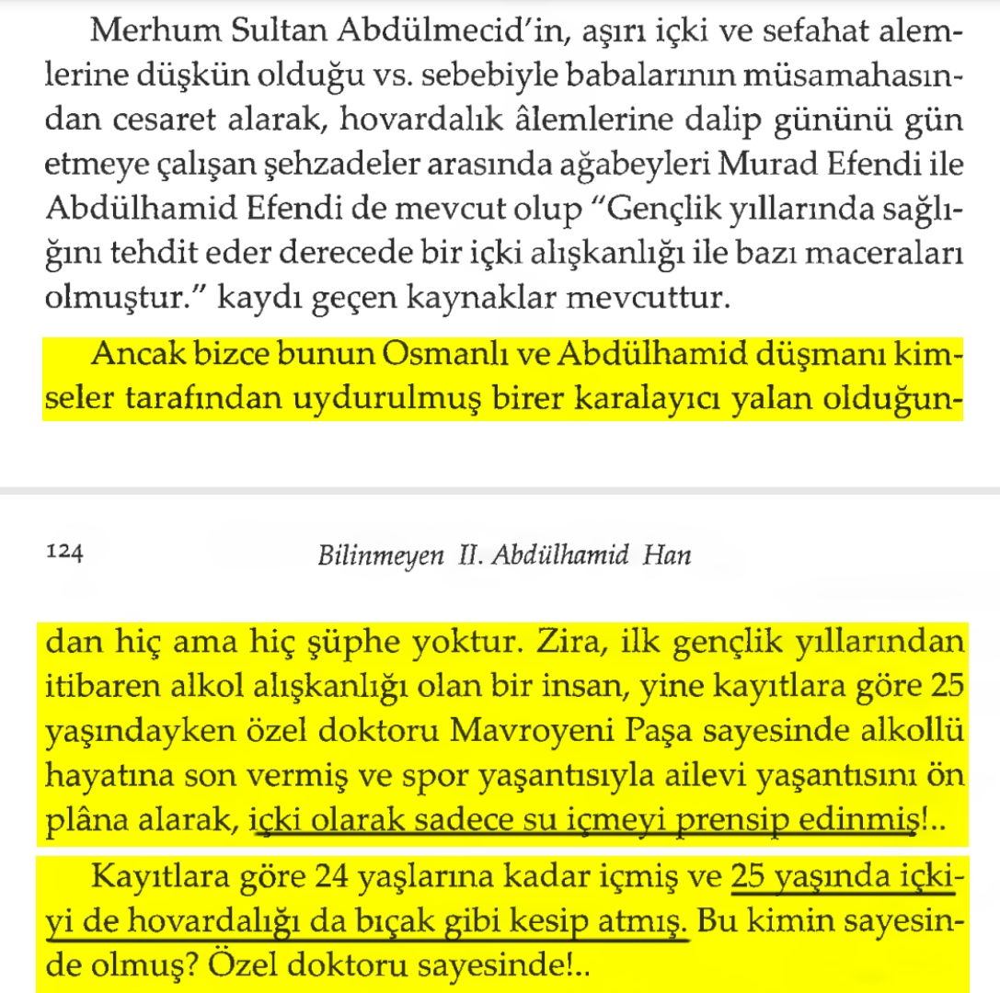

Şükrü Beyin Sultan Hamid’in İçki İçmediğini söylemesi Ve Sultan Abdülhamidin işret sofrasına icabet etmemesi 📚Saraydaki Kayserili Şükrü Bey, s.78

*📌 Zaptiye Nazırı Hüseyin Nazım Paşa Abdülhamid'in ayyaşlığa kızdığını söylüyor:*📚 Hüseyin Nazım Paşa, Hatıralarım, s.319.

*📌 İsmail Hami Danişmend Eserinde Abdülhamid'i dindar, içki kullanmaz biri diye tasvir ediyor:*📚 İsmail Hami Danişmend, 31 Mart Vak'ası, s.78.

*📌 Abdülhamid'in kızı Sadiye Osmanoğlu babam içki sevmez saraya sokulmasınıda yasaklamıştı diyor:*📚 Şadiye Osmanoğlu, Babam Abdülhamid, s.24.

*📌 Ali Said bey: "Abdülhamid Müskirattan (içki) tab'an müteneffir oldukları (nefret ettikleri) gibi, isti'mal edenleri (içenleri) de pek sevmezdi.*📚 Ziya Nur Aksun, Osmanlı Tarihi, c.4, s.210.

*📌 II.Abdülhamid'in sadece vakıâ gençliğinde işret kullandıkları sabittir buna nazaran Padişah olduklarında ağzına hiç içki sürmemişlerdir:*📚 Ziya Şakir, Sultan Abdülhamid, s.502.

*Sultan II. Abdülhamid'in içki ve kadın bağımlısı bir hükümdar olduğu iddia edilmiştir. Bu iddialar tamamen asılsızdır. _Gençliğinde içki içen II.Abdülhamid, hükümdar olduktan sonra içki kullanmamış, içkiyi yasaklamak için sert önlemler almıştır._*
📚 Mehmet Bicik, Bilinmeyen Yönleriyle II.Abdülhamid, s.235-236.
📌 *Doktoru Mavroyeni Paşa sayesinde içkiyi de hovadarlığıda bıçak gibi kesip atmış.*📚 Levin Panos Dabağyan, Bilinmeyen İkinci Abdülhamid Han, s.123-124